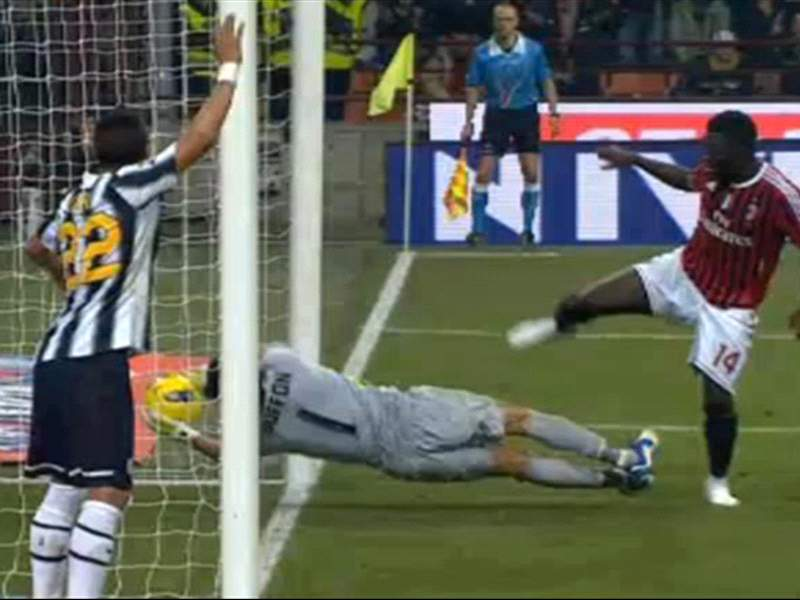

12/03/19
Primo anno di Cristiano Ronaldo alla Juventus. Al ritorno allo Stadium sembra impossibile poter ribaltare il 2-0 rimediato al Wanda Metropolitano contro un Atletico Madrid famoso per la sua insormontabile difesa; invece, come dice un caro detto bianconero, bisogna crederci fino alla fine. La Juve rimonta il risultato grazie a due incornate del fenomeno portoghese e, proprio alla fine del match, grazie ad un grande strappo del più grande talento italiano Federico Bernadeschi, calcio di rigore per la Juve. Si presenta ancora lui, più freddo che mai, batte Oblak ed è 3-0 per la Juve a pochi istanti dalla fine.
Che dire se non
29/04/18
In un anno in cui Juve e Napoli non sono mai state così testa a testa, la 35° giornata rappresenta il punto di svolta. La Juve, prima in vantaggio con Douglas Costa, viene rimontata dal Inter e va sotto grazie ad un gol di Icardi e poi ad un autogol di Barzagli. Quando tutto sembra perduto per le speranze bianconere, la Juventus riesce a pareggiare grazie ad una splendida azione di Cuadrado. Le emozioni sembrano essere terminate, ma proprio allora, all'89°, un'incornata del Pipita su punizione porta la Juventus in vantaggio. Complice la sconfitta del Napoli il giorno dopo a Firenze, Higuain consegna alla vecchia signora il suo 7° scudetto di fila.
Come sempre
14/02/16
Falsa partenza per la Juve in campionato nella stagione 2015/2016. Sempre impossibile rimontare la davanti, con Inter e Napoli che viaggino spediti. Ma come dice un vecchio detto "Chi va piano, va piano e va lontano": le due capoliste, che forse vanno troppo veloci per loro stesse, decidono di suicidarsi, dando cosi la possibilità alla Vecchia Signora di riprenderle. E' proprio Juve-Napoli il punto di svolta che segna l'ennesima vittoria bianconera della Serie A: il Napoli attacca in cerca del gol, la Juventus difende coi denti. Tutto sembra portare ad uno sterile 0-0 ma, proprio, alla fine, Zaza con una perla dalla trequarti infila Reina e permette alla Juventus di tornare in vetta alla classifica di quel 'punto' che ne determinerà la vittoria del campionato.
Come si dice nell'ippica
11/04/17
Alla fine del sorteggio, tutti davano la Juve già eliminata poiché si trovava contro un Barcellona composto da mostri sacri e guidato da uno dei più forti giocatori del mondo, Leo Messi. Allo Stadium va in scena l'andata di questi ottavi di finale, oltre a quella che sarà una delle migliori prestazioni di sempre della formazione guidata da Max Allegri. Nel confronto tra uno dei tridenti più forti al mondo, la MSN, e una delle difese più rocciose della storia del calcio, la BBBC, a brillare più di tutti è un diamante grezzo di nome Paulo Dybala, che grazie a due gesti di classe indiscussa riesce a portare la vecchia signora in vantaggio di 2 goal; partita poi chiusa da un'incornata della Chiella nel secondo tempo. Il ricordo di una serata incredibile, in cui il diamante grezzo diviene puro, in cui sembra l'inizio di qualcosa che, ahimè, non accadrà.
Nonostante tutto, grazie per quello che hai fatto
25/02/12
Ed eccoci qui, alla fine di questa lista. Come non menzionare la partita che ha dato inizio al predominio bianconero per 9 lunghi anni. Il Milan di Allegri, pieno di campioni, contro la prima Juventus di Conte, una squadra molto più 'umile' rispetto al diavolo ma piena di quella che oggi viene definita 'Garra'. Sarà proprio questo pareggio a permettere alla Vecchia Signora di conquistare il primo scudetto di questo enorme ciclo ennale, pieno di momenti tanto incredibili quanto deludenti, che ha visto vestire la maglia bianconera a un'incredibile numero di campioni mondiali e chissà cosa ci aspetta il futuro. Signori e signore, ecco a voi la squadra più titolata d'Italia
Juventus 